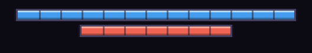
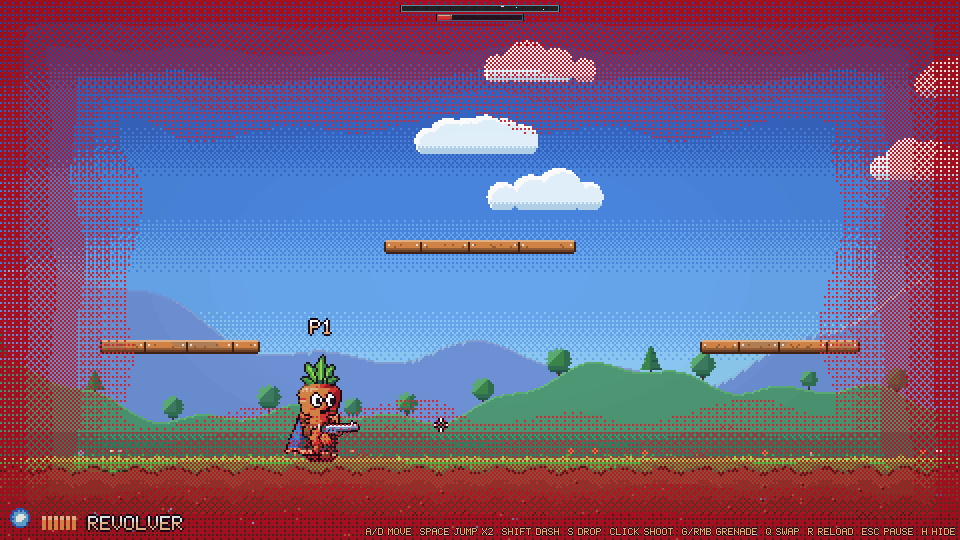
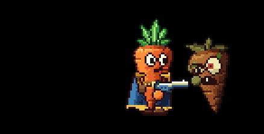

Health
Every carrot has a recharging shield over its health. Hits drain the shield first; once it breaks, hits cost health, and at 0 health the carrot is knocked down.
Shield and health
Each carrot has 130 pts points of shield on top of 70 hp points of health. Hits drain the shield first. Health only goes down once the shield is at 0, and at 0 health the carrot is knocked down.
A hit bigger than what's left of the shield breaks it and the rest spills into health, so a big hit
can cost both in one go. (With shield_overflow off, the shield soaks up the whole breaking hit
instead and health is only hurt from the next one.)
Enemy attacks are on the same scale as your shield and health, so you can read an attack's damage against your bars (each enemy page lists its damage, for example the Zombie's slap).
The bars

Your bars sit at the top middle of the screen: a long blue shield bar over a shorter red health bar, each as long as its maximum. When a hit lands, a pale chunk briefly shows what it took before sliding away. Damage numbers over your carrot are blue when only the shield took the hit and red when it reached your health. Boss bars have the bottom of the screen (see Enemy names and boss bars).
The shield breaking
When the shield hits 0 the carrot flashes white-blue and shatters: shards burst off it with a glassy crash. For as long as the shield stays down, little electric arcs crawl over the carrot with the odd crackle, and the empty shield bar's frame flickers. Everyone in the squad sees this on your carrot, so a teammate with a broken shield is easy to spot.
Low health: the red jelly

From the first point of health you lose, red bands creep in from the edges of your screen. They close in further the lower you get, wobble like jelly and breathe faster near the end. They're dithered in pixel steps rather than a smooth gradient. Only you see your own.
Taking a hit
- The carrot flashes white, squashes, and is knocked back by the hit.
- Your screen shakes and the damage pops up as a number over your head.
- Headshots: enemy shots that land on the top of your carrot do 2x damage.
- Grace period: for 1 s after a hit you can't be hurt again, and the carrot blinks to show it.
A dash makes you invincible too (see Dash).
Recharging
Both recharge on their own once you stop getting hit, on separate clocks that any hit restarts:
| Starts after the last hit | Then refills at | |
|---|---|---|
| Health | 2.5 s | 18 hp/s |
| Shield | 4.5 s | 36 pts/s |
Health comes back first, even while the shield is still down. The shield takes longer to start but refills faster. When it starts refilling the carrot flashes again, more softly, with a rising hum. The way to heal is to break off and stay safe for a moment.
Knocked down
At 0 health the carrot is down. It tips over onto its back with its boots kicking in the air, stars circling its head, and drops its gun. A downed carrot can't move or shoot, nothing recharges, and it stays down.

When every player is down, the squad is wiped: a banner shows, and 3.5 s later the host restarts the level for everyone.
Co-op
Each player's own machine tracks their shield and health and decides when they're hit, so a hit always matches what that player saw. Both are streamed to everyone, so you see your teammates' damage numbers, shield breaks, zaps, recharge flashes and knock-downs. Someone who joins while your shield is down sees you zapping straight away.
Design notes
A big recharging shield over a small health pool rewards backing off: you can soak a few hits, but once the shield breaks you're fragile until you get away. Health recharges sooner than the shield so a short break is enough to stop being in danger, while getting the shield back takes a proper breather. The short grace period after a hit stops a crowd from draining you all at once.
History
- The single 100-point health bar became 130 pts shield over 70 hp health, with the shield effects and the low-health jelly. Enemy damage wasn't rescaled, so attacks are now about half as deadly as before.
Tunable parameters
These are read straight from the game's files, so they are always the current values. Open the file in the Godot Inspector to change them.
Shield, health and movement
Edit styles/tuning.tres · fields defined in scripts/tuning.gd
| Parameter | Value | Range | What it does |
|---|---|---|---|
| Movement | |||
run_speed | 115 px/s | 0 to 400 or more | Players only: top running speed (enemies take their walk speed from their stats). |
accel | 1300 px/s² | 0 to 3000 or more | How quickly it speeds up to full speed on the ground. |
decel | 1700 px/s² | 0 to 3000 or more | How quickly it slows to a stop on the ground once it lets go (lower = more slide). |
air_accel | 800 px/s² | 0 to 3000 or more | How quickly it can change speed in mid-air (lower = less air control). |
gravity | 1050 px/s² | 0 to 3000 or more | Downward pull while rising (falling multiplies this by fall_mult). |
fall_mult | 1.45x | 0.5 to 4 or more | Gravity is this many times stronger while falling, so falls are snappier than rises. |
max_fall | 440 px/s | 0 to 1500 or more | Fastest it can fall. |
jump_speed | 390 px/s | 0 to 1000 or more | Launch speed of a jump (the carrot's default reaches about 72px high). |
jump_cut | 0.45x | 0 to 1 | Letting go of jump early multiplies the upward speed by this, for short hops (1 = no cut). |
coyote | 0.09 s | 0 to 0.5 or more | Grace period to still jump after walking off a ledge. |
jump_buffer | 0.12 s | 0 to 0.5 or more | A jump pressed this long before landing still counts. |
| Sprint | |||
sprint_mult | 2x | 1 to 4 or more | Players only: holding Shift raises the top running speed to run_speed times this (1 = no sprint). Enemies never sprint. |
sprint_accel | 500 px/s² | 10 to 3000 or more | How quickly the top speed ramps up to sprint speed and back down after letting go, so a sprint winds up and down instead of switching. |
sprint_in_air | Yes | Keep sprint speed through a jump that started at a sprint (while Shift stays held). Off, a jump drifts back to running speed in the air. | |
| Double jump and dash | |||
air_jumps | 1 script default 0 | 0 to 5 or more | Extra jumps in mid-air before landing (0 = no double jump; enemies use 0). |
air_jump_speed | 340 px/s | 0 to 1200 or more | Launch speed of a mid-air jump (a touch weaker than the ground jump: about 55px). |
dash_speed | 360 px/s | 0 to 1200 or more | Speed during a dash. |
dash_time | 0.15 s | 0 to 1 or more | How long a dash lasts; distance is dash_speed * dash_time (about 54px). |
dash_cooldown | 0.45 s | 0 to 3 or more | Wait from the start of one dash until the next one is allowed. |
air_dashes | 1 | 0 to 5 or more | Dashes allowed per trip through the air (ground dashes are only limited by the cooldown). |
dash_iframes | 0.2 s | 0 to 1 or more | Invincible for this long from the start of a dash: the whole dash plus a little grace, so a dash *through* a shot never gets you hit on the way out. Bullets pass through you meanwhile. |
| Shield and health | |||
max_shield | 130 pts | 0 to 1000 or more | Players only: the full shield. A carrot's life is a shield on top of its health. Hits drain the shield first; health only goes down once the shield is at 0, and the carrot is knocked out when health reaches 0. Both recharge on their own a while after the last hit (any hit restarts both waits). |
max_health | 70 hp | 1 to 1000 or more | The full health. (Enemies' own health is in their stats.) |
shield_overflow | Yes | A hit bigger than what's left of the shield: on, the rest spills into health; off, the shield soaks up the whole breaking hit and health is only hurt from the next one. | |
shield_regen_delay | 4.5 s | 0 to 30 or more | Time after the last hit before the shield starts to recharge... |
shield_regen_rate | 36 pts/s | 0 to 400 or more | ...and how fast it then refills. |
health_regen_delay | 2.5 s | 0 to 30 or more | Time after the last hit before health starts to recharge (it can refill while the shield is still down)... |
health_regen_rate | 18 hp/s | 0 to 200 or more | ...and how fast it then refills. |
| Getting hit | |||
headshot_mult | 2x | 1 to 5 or more | Players only: enemy shots that land on a player's head do this many times the damage. (Guns, their damage and falloff live in Weapon resources: styles/weapons/.) |
hurt_grace | 1 s | 0 to 5 or more | Players only: after a hit the carrot flashes white, then blinks and can't be hurt again for this long. |
Shield effects
Edit styles/shield_look.tres · fields defined in scripts/shield_look.gd
| Parameter | Value | Range | What it does |
|---|---|---|---|
| Break | |||
break_whiten | 0.85 | 0 to 1 | The flash on the carrot when its shield breaks: how far its colours go to white, then this tint on top (brighter than 1 blooms). |
break_color | #bfe8ff | ||
break_glow | 2.6 | 0.5 to 4 | |
break_time | 0.14 s | 0.02 to 0.6 | |
shard_count | 18 | 0 to 60 | Shards bursting off the carrot. |
shard_speed | 150 px/s | 20 to 400 | |
shard_color | #dff4ff | ||
shard_end | #4a90d8 | The colour shards fade to as they fall. | |
shard_glow | 1.6 | 0.5 to 3 | |
shard_life | 0.7 s | 0.1 to 2 | |
break_shake | 0.5 | 0 to 1 | |
| Down: zaps | |||
zap_color | #9ad8ff | The little arcs crawling over the carrot while its shield is down. | |
zap_glow | 2.4 | 0.5 to 4 | |
zap_gap_min | 0.12 s | 0.02 to 2 | Seconds between arcs (a random time in this range). |
zap_gap_max | 0.45 s | 0.02 to 2 | |
zap_time | 0.07 s | 0.02 to 0.4 | How long each arc shows. |
zap_length | 13 px | 4 to 40 | An arc's length, and how many kinks it has. |
zap_kinks | 4 | 1 to 8 | |
zap_sound_chance | 0.35 | 0 to 1 | Chance that an arc crackles audibly. |
| Recharge | |||
recharge_whiten | 0.45 | 0 to 1 | The softer flash when the shield starts refilling: how far its colours go to white, then this tint on top (brighter than 1 blooms). |
recharge_color | #bfe6ff | ||
recharge_glow | 2.1 | 0.5 to 4 | |
recharge_time | 0.18 s | 0.02 to 0.6 | |
| Sound | |||
break_volume | 0.9 | 0 to 1 | |
zap_volume | 0.25 | 0 to 1 | |
recharge_volume | 0.55 | 0 to 1 | |
others_volume | 0.6 | 0 to 1 | Other players' carrots play these this much quieter. |
Bars and low-health jelly
Edit styles/player_hud.tres · fields defined in scripts/player_hud.gd
| Parameter | Value | Range | What it does |
|---|---|---|---|
| Bars | |||
top | 6 px | 0 to 80 | From the top of the screen to the top of the shield bar. |
px_per_point | 1.2 px | 0.25 to 4 | Bar length per point, so the shield bar and the health bar are as long as each other's maximum (130 shield is nearly twice as long as 70 health). |
shield_height | 5 px | 2 to 16 | |
health_height | 5 px | 2 to 16 | |
gap | 2 px | 0 to 12 | Pixels between the shield bar and the health bar under it. |
notch_every | 10 pts | 0 to 100 | A thin notch every this many points, so you can count chunks. |
chip_hold | 0.5 s | 0 to 2 | The white chip of recent damage: how long it holds, then how fast it drains. |
chip_speed | 80 pts/s | 5 to 400 | |
chip_color | #fff0e0 | ||
| Bars / Shield | |||
shield_fill | #4aa8ff | ||
shield_top | #bfe6ff | The bright top row of the fill. | |
shield_empty | #16243a | The empty part of the shield bar. | |
shield_down_edge | #9ad8ff | While the shield is down, its empty bar's frame flickers in this colour (brighter than 1 glows)... | |
shield_down_glow | 1.8 | 0.5 to 4 | |
shield_down_sparks | 0.35 | 0 to 1 | ...with sparks of it crackling inside the bar. |
| Bars / Health | |||
health_fill | #ff6a5a | ||
health_top | #ffb0a0 | ||
health_empty | #1e1828 | ||
health_low_color | #ff2030 | Below this fraction of health the fill pulses between health_fill and this. | |
health_low | 0.3 | 0 to 1 | |
| Low health jelly | |||
jelly_edge | #b01224 | Red bands creep in from every edge of the screen as your health drops: none at full health, from the first point lost, and nearly closing in at 0. Only you see your own. The outermost band... | |
jelly_inner | #e0303c | ...and the innermost one. | |
jelly_reach | 0.55 | 0.05 to 1 | How far in it reaches at 0 health, as a fraction of the way to the screen's middle. |
jelly_strength | 0.8 | 0 to 1 | How solid it is at the very edge at 0 health (the bands thin out inward with a dither). |
jelly_bands | 5 | 1 to 12 | Bands from the edge inward. |
jelly_cell | 2 px | 1 to 8 | Size of a dither cell, in game pixels. |
jelly_wobble | 0.12 | 0 to 0.5 | Its edge wobbles like jelly... |
jelly_pulse | 0.08 | 0 to 0.5 | ...and it all breathes in and out, faster as health gets lower. |
jelly_pulse_speed | 2.5 /s | 0.1 to 10 | |